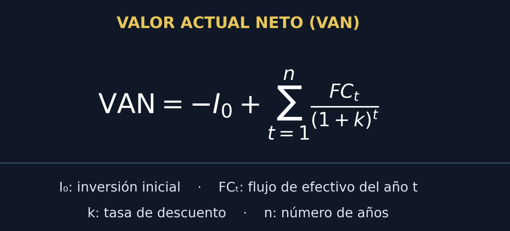
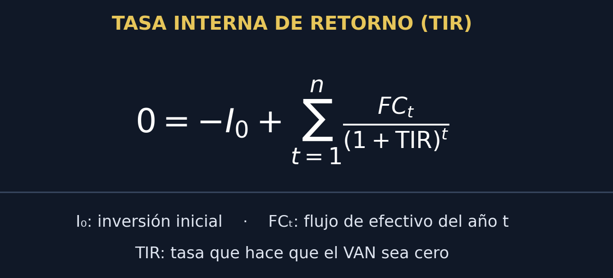

Rentabilidad sobre ventas
Calcula qué proporción de las ventas representa la utilidad.
Margen de utilidad: 15.00%
Margen = (utilidad neta ÷ ventas) × 100
Plataforma digital interactiva diseñada para la planeación financiera, el análisis patrimonial, el control por áreas de responsabilidad y la toma de decisiones gerenciales basadas en datos.
Criterios técnicos, de usabilidad y estética institucional aplicados al desarrollo de este recurso digital.
Se integró la paleta institucional de la Universidad Mariano Gálvez (Azul Marino #003366, Rojo Carmesí #C8102E y Dorado #D4AF37) sobre una interfaz oscura de alto contraste.
Este diseño ergonométrico reduce la emisión de luz azul y previene la fatiga ocular durante jornadas prolongadas de estudio y análisis nocturno.
La estructura sigue una jerarquía lógica dividida en cuatro módulos progresivos: diseño, teoría, herramientas analíticas y simuladores prácticos.
El menú superior fijo (sticky header) y las pestañas interactivas permiten localizar fórmulas, tablas comparativas y casos sin pérdida de contexto.
Desarrollada mediante CSS Grid y Flexbox, la página ajusta automáticamente sus columnas, tipografías (Inter y Playfair Display) y tablas a pantallas de escritorio, tabletas y teléfonos móviles.
Incluye calculadoras nativas en JavaScript que operan sin necesidad de servidores externos.
Marco conceptual, objetivos estratégicos y diferenciación frente a otras ramas de la contabilidad.
La Contabilidad Administrativa (o de Gestión) es un sistema de información al servicio exclusivo de las necesidades de la administración interna. Su enfoque es pragmático, analítico y orientado hacia el futuro.
En entornos empresariales altamente competitivos, los registros históricos son insuficientes para anticipar cambios del mercado. La contabilidad administrativa transforma datos contables en inteligencia de negocio.
Permite identificar qué líneas de productos son verdaderamente rentables, determinar el punto de equilibrio operativo, gestionar la liquidez mediante el fondo de maniobra y evaluar si un proyecto de inversión generará valor económico real.
| Criterio Comparativo | Contabilidad Administrativa | Contabilidad Financiera | Contabilidad de Costos |
|---|---|---|---|
| Usuarios Principales | Internos (Gerentes, directores, jefes de área). | Externos (Accionistas, bancos, SAT, proveedores). | Internos y externos (Producción y valuación). |
| Enfoque Temporal | Orientada hacia el futuro (presupuestos y proyecciones). | Histórica (registra hechos ya ocurridos). | Histórica y predeterminada (costos estándar). |
| Normativa Reguladora | Flexible; se adapta a las necesidades de la gerencia. | Obligatoria y estricta (NIIF / PCGA). | Mixta (criterios internos y normas de inventario). |
| Nivel de Detalle | Segmentada por áreas, productos, sucursales o procesos. | Global (presenta la empresa como un todo). | Detallada por orden de producción o departamento. |
Instrumentos analíticos para el diagnóstico patrimonial, financiero, económico y de inversión.
El Análisis Patrimonial evalúa la estructura del Balance General mediante porcentajes verticales (peso de cada partida sobre el total) y variaciones horizontales (evolución entre periodos).
El Fondo de Maniobra (FM) representa el colchón de seguridad financiera para operar sin tensiones de liquidez a corto plazo:
Principio de prudencia financiera: El Activo No Corriente debe financiarse con Capitales Permanentes (Patrimonio Neto + Pasivo No Corriente) y dejar un margen positivo para el ciclo operativo.
Es vital distinguir entre el beneficio (cifra absoluta en quetzales) y la rentabilidad (relación porcentual entre el beneficio y el capital invertido).
La RE mide la eficiencia operativa de los activos sin importar cómo se financiaron. La RF mide el rendimiento neto que reciben los socios o accionistas.
Analiza el impacto del uso de deuda sobre la rentabilidad de los accionistas comparando la Rentabilidad Económica (RE) con el Coste de la Financiación Ajena (CFA):
Consiste en determinar si resulta más rentable fabricar internamente un componente o servicio, o adquirirlo de un proveedor externo.
Evalúa la capacidad real de la empresa para generar liquidez, superando las limitaciones del criterio de devengo contable. Clasifica los movimientos en tres áreas:
Actualiza todos los flujos netos de efectivo futuros proyectados al momento presente utilizando una tasa de descuento (costo de capital o TREMA) y resta la inversión inicial:

Es la tasa de descuento específica que iguala el Valor Actual Neto a cero, representando la rentabilidad porcentual intrínseca del proyecto.

Alineación estratégica, evaluación del desempeño y asignación de costos departamentales.
El control administrativo persigue tres fines: diagnosticar desviaciones, comunicar metas claras y motivar al talento humano.
Divide la empresa en unidades donde cada gerente responde únicamente por sus partidas controlables:
Metodología para asignar los costos indirectos a los productos o servicios finales:
Herramientas interactivas para aplicar en tiempo real los modelos financieros del curso.
Seis herramientas complementarias para el análisis contable y financiero.
Calcula qué proporción de las ventas representa la utilidad.
Margen = (utilidad neta ÷ ventas) × 100
Compara el efectivo recibido con el efectivo pagado durante un período.
Flujo neto = entradas − salidas
Compara costos relevantes por unidad y por la cantidad indicada.
Compara costos relevantes; considera calidad, capacidad y costos adicionales.
Observa la relación entre activos, pasivos y patrimonio.
Patrimonio = activos − pasivos
Ingresa inversión, tasa y cinco flujos anuales al final de cada período.
VAN = suma de flujos descontados − inversión inicial
Estima la tasa que hace que el VAN sea cero para cinco flujos anuales.
La TIR es la tasa de descuento que hace que el VAN sea igual a cero.
Interpretación: un VAN positivo suele indicar que el proyecto genera valor sobre la tasa de descuento; la TIR debe compararse con la tasa mínima requerida. Los resultados son ilustrativos.